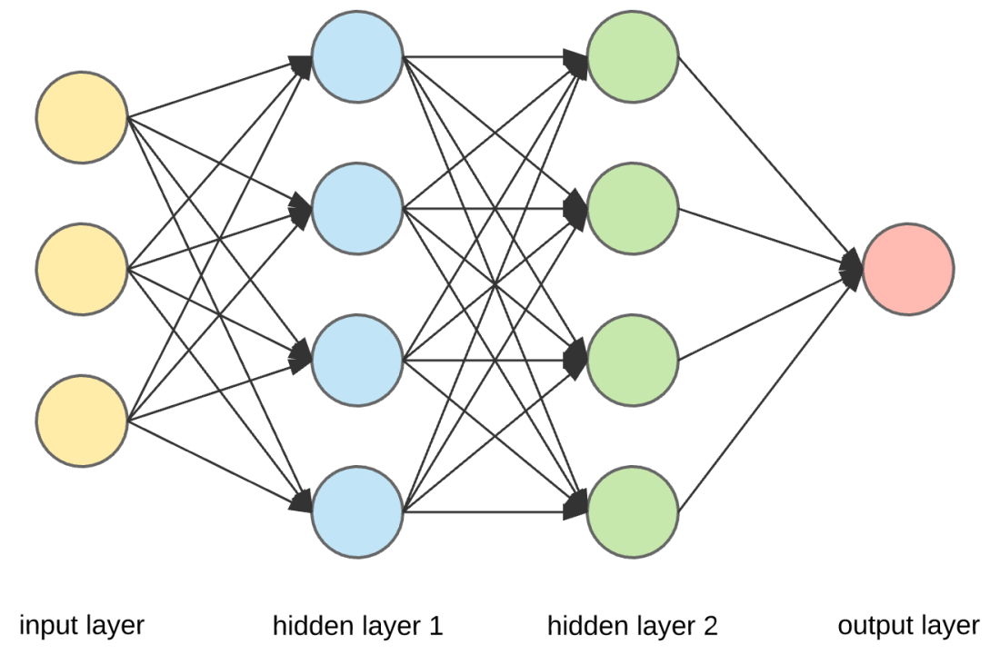

Projects
Project 1: Senior Design: Accurate Cancer Prediction Using AI
I am currently serving as a senior engineer on a project that aims to leverage artificial intelligence (AI) to improve the prediction of cancer occurrence and recurrence. Despite advancements in medicine, cancer remains a significant challenge due to the limited ability to predict its occurrence and recurrence. The project involves building and training a simple AI model for cancer prediction, with the goal of improving cancer treatment. The ultimate goal is to create an AI model capable of recognizing and predicting the risk of cancer occurrence and recurrence, which will be continually improved through training on multiple sets of data provided by leading research institutes and hospitals.
As the main contributor and senior engineer on this project, I am utilizing my experience in AI and machine learning to lead the development and training of an AI model for cancer prediction. A significant part of my role involves focusing on training the model, with a particular emphasis on learning more about transfer learning. Transfer learning is a machine learning method where a pre-trained model is used as the starting point for a model on a second task. It’s a popular method in deep learning because it can train deep neural networks with comparatively little data. This is a big advantage in this project, as medical datasets are often small. I will be utilizing my knowledge of transfer learning to improve the accuracy of our model. Furthermore, I will also be responsible for validating the accuracy of the model, ensuring it’s reliable and robust before deployment.
This role is allowing me to further develop my technical skills in Python, TensorFlow, and Keras. I am gaining practical experience in AI and machine learning, specifically in building and training AI models for medical diagnosis.
My contribution to this project is significant. By leading the development of an AI model capable of recognizing and predicting the risk of cancer occurrence and recurrence, I am contributing to advancements in cancer treatment. This could potentially lead to improved patient outcomes and a better understanding of cancer.
Project 2: ISU Marketing App: Software Practices (COM S 309)

During my COM S 309 course, I was part of a team that developed an ISU marketing app. This app was designed to facilitate the online sale of students’ belongings, thereby helping them generate profits. My specific role in this project involved coding functionalities for the creation and management of users in the database, as well as for admins and the validation of customer activities. This experience not only honed my technical skills but also provided valuable insights into the practical aspects of software development.